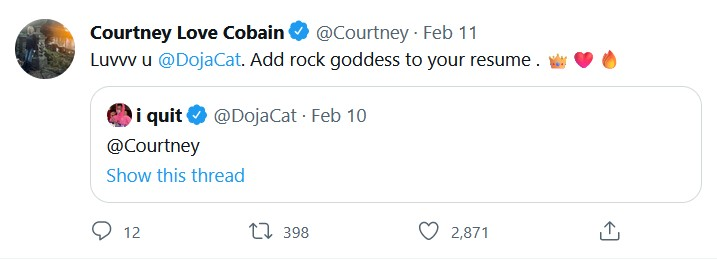

Early Birds:
visualizing who owns @john, @mary, and other common first-name Twitter handles
By Carol Dinh ✦
In February 2022, Hole’s “Celebrity Skin” raged in my head, for whatever reason; I hummed it while studying, bopped along to its jubilant chorus on the way to class. Perhaps the music industry was testing a novel telekinetic advertising channel, because when Doja Cat dropped her cover of the feisty classic for her Super Bowl cameo, I dropped everything and turned it on. The moment was built for me. I remember how Doja revealed her collaboration with Hole’s frontwoman on Twitter: she simply tagged @Courtney.

That nine-character interaction had me thinking about the power, the mystique of the standalone first name: an icon in a package. There is only one Beyoncé, one Rihanna, one Elvis. There are many Courtneys, but none with the image of Courtney Love. The self-destructive bombshell. The notorious grunge widow. The poor user who’d replied to that post, “who's that”, was dragged cross-generationally, ratioed into oblivion. Who’s Courtney? Who’s Courtney? Who else could Courtney be?
Even for those of us who aren’t celebrities, there is an allure to claiming our own first name; declaring ourselves, in our own small bubbles, as the only Emily or the only Joshua in our world. One of my friends recently realized, with dismay, that they could have rejected the auto-suggested first-initial-last-name-number identifier when signing up for a college email, and instead been [first-name]@umd.edu. When another friend let slip that they had a second friend named Caroline, I jokingly demanded they admit I was the original. The other could be Caroline2.
But a lot of the first-namers weren’t just lucky early birds; they had a leg up. Twitter’s first employees, including founders Evan Williams and Noah Glass and future CEO Jack Dorsey, claimed @ev, @noah, and @jack in March 2006. (Twitter’s first public tweet was made by Dorsey, pictured below.)
I took a list of the top 200 first names from the past century, half given to boys and half to girls, and combed the Twitter API for information on their owners on Twitter. 180 of them had active accounts (the other 20 had been disabled). Some of these accounts may have been the first to claim the name; others may have been bought, or re-claimed after the original account was deleted. Some of these accounts were engineers, designers, investors, and leaders in the tech industry; others were public figures establishing their presence on the emerging platform. And of course, we have our commoners. (My favorite is @keith with one follower, whose avatar depicts the Voltron character.)
Click on the users to see more details about them.
Some users will overlap with others on the chart. To access a user displayed "below" another, right click on the user on "top".
Industries represented:
Technology
Investing & Venture Capital
Other Business & Corporate
Media & Press
Arts, Entertainment, & Sports
Blogging & Content Creation
Fine Arts & Small Business
Unknown
Click on a user to see more details.

Username
@username
Followers: 0
Data & Methodology
Much of the data for this project was collected from the Twitter API in January 2023—for instance, the display names, profile images, and follower counts—and thus represents the metrics for the included accounts at the time. In February 2023, Elon Musk paywalled the Twitter API, killing bots and other third-party apps that communicated with it. Hence the data displayed in this project is not updated live.
The industries represented by included users were determined by their Twitter biography, the content of their feed, and/or searching the Internet for additional profiles matching the user’s display name (such as Instagram, Facebook, and LinkedIn profiles).
The interactive chart was built using D3.js. The source code and data is publicly accessible on GitHub.